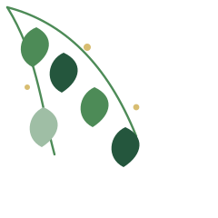

Un momento con Dios
Cuando mi corazón necesita hablar
Un espacio para detenerme, respirar, escuchar la Palabra y encontrar esperanza.
“No necesitas tener todas las respuestas para acercarte a Dios”.